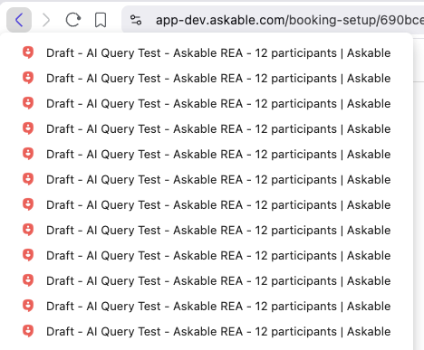
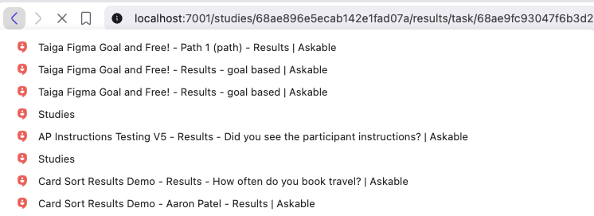

google.com?search=
Make State
Great Again
site.com/blog?page=3#section2
path
parameters
(app state)
(app state)
fragment
(client-side interaction)
(client-side interaction)
Cool example:
customise a download
prismjs.com/download.html
#themes=prism&languages=markup+css+clike+javascript+go+graphql&plugins=line-highlight+autolinker
Server side rendering
site.com/index.php?page_id=123
Pre-select options
site.com/shoes?size=11&color=orange
Open a sidebar
site.com#show-sidebar
Why is this good?
- Persistent on refresh (and survives crashes)
- Bookmark, deep-link, share
- Respects browser history
- Debuggable - user state logged
What happened? SPA happened.
- SPA routing is a hack. A pain to keep URL in sync (so we don't do it)
- No-one's responsibility - PM, dev, design?
- Don't notice or test ephemeral state
- Users don't ask for it, but appreciate it
What state should we sync?
- Sorting
- Filtering
- Searching
- Pagination
- Preselect options
- Prefill forms
- Video timestamps
- Auto-expand sections
- Scroll to position
- Highlight text fragments
- Encode whole app state
- UTM tracking
How do we sync URL state?
Use history to append URL without reload.
-
Load:
const params = new URLSearchParams(window.location.search) -
Access:
const searchValue = params.get('search'); -
Save:
history.pushState(null, '', '?search=hello') -
Use
replaceStatefor frequent changes like search
React Router
Use useSearchParams() hook.
-
Load:
const [searchParams, setSearchParams] = useSearchParams() -
Access:
const searchValue = searchParams.get('search') - Save:
setSearchParams({ search: value })
NextJS
Tanstack Router
<Link to="/shop" search={{
page: 3,
sortBy: 'price',
categories: ['a','b']
}}>Generates a type-safe URL:
/shop?page=3&sortBy=price&categories=%5B%22a%22%2C%22b%22%5D
Nuqs
- Type-safe search params state manager for React
- Enhancement for React Router, NextJS etc.
Let's improve our app!
- ✅ Unmoderated study - direct to the results
- ✅ Discover page - view specific insight
- ❌ Studies - no persistence on search, filters, pagination
- ❌ AI Query - can't link to section, findings, highlights
- ❌ Playback - can't link to timestamp/insight
🔙 Back Button
✨ Magic Undo
Use descriptive titles for navigation.
-
Project setup = 🤔 unhelpful

-
Unmoderated results = 👍 better

Don'ts and caveats
- Don't put sensitive data in URL. Can be tracked by third parties
- Hash fragments are client-only. Don't show in server logs. Can interfere with anchor scrolling
- URL is a string so parse numbers, arrays etc.
- Remember to serialise with
encodeURI() - Don't pollute the URL with default values
- There's a URL character limit but you likely won't hit it
Thank you for your attention in this matter
Next... make keyboard shortcuts great again